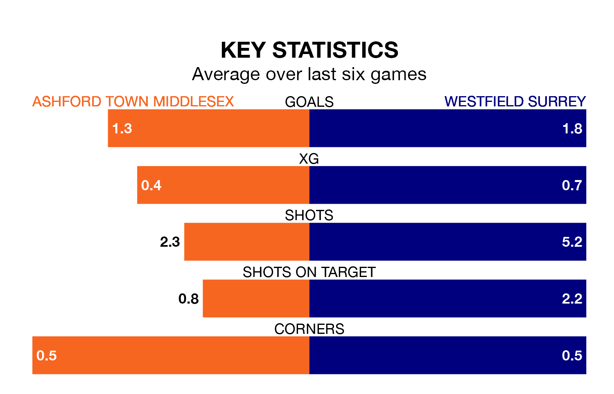

Westfield Surrey visit Ashford Town Middlesex at the Robert Parker Stadium on Saturday on the back of four consecutive wins in the Isthmian League Division One South Central.
Westfield Surrey have picked up 13 points from their last six games, and they face a Tangerines side who have also won their last two matches, and collected nine points from the last possible 18.
With 39 goals in 35 games so far this season, Ashford Town Middlesex are the league's third-lowest scorers with 1.1 goals per game. And they are conceding more than average, letting in 60 goals at a rate of 1.7 per game.
Westfield Surrey, meanwhile, are above average scorers, with 2.0 goals per game, compared to a league average of 1.6. They have conceded 1.3 goals per game.
In the last 10 years, Ashford Town Middlesex and Westfield Surrey have played each other on eight occasions. Ashford Town Middlesex won two of them, Westfield Surrey four, and they drew twice.
On average, the Tangerines scored 1.2 goals and Westfield Surrey 2.2 in those matches.
Their last meeting was on December 16, when they played out a 0-0 draw.
The Tangerines are 17th in the table after 35 games, of which they have won nine and drawn six, earning 33 points.
The visitors are 12 places ahead of the home side in fifth, with 22 wins and seven draws putting them on 73 points.
Ashford Town Middlesex's last match was on April 13, a 2-0 win against Corinthian-Casuals.
Westfield Surrey beat Badshot Lea 4-0 last time out, on Tuesday.
Updated: 15:40 (UTC), 18/04/24